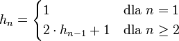

W tym podsumowaniu odpowiemy sobie na pytanie, ile należy wykonać ruchów pojedynczymi
krążkami, by rozwiązać łamigłówkę Wież Hanoi z n krążkami – oznaczmy tę liczbę
przez hn. Wiemy, że jeśli wieża jest jednoelementowa, to po prostu
wykonujemy przeniesienie, czyli h1 = 1. Wiemy również, że gdy
n jest większe niż jeden dwukrotnie wywołujemy funkcję rekurencynie dla
n-1 elementowych wież oraz wykonyjemy jedno przesunięcie, czyli
hn = 2 · hn-1 + 1 dla n≥2.
Reasumując, z powyższych rozważań wynika taka rekurencyjna zależność:

Spróbujmy rozpisać powyższy wzór:
hn
= 2hn-1+1
= 2(2hn-2+1)+1
= 22hn-2+2+1
= 22(2hn-3+1)+2+1
= 23hn-3+22+2+1
= 23(2hn-4+1)+22+2+1
= 24hn-4+23+22+2+1
Rozpisując wzór z poprzedniego akapitu można zobaczyć regularność, jeśli
rozpiszemy ten wzór
k razy otrzymamy:
hn =
2khn-k+2k-1+2k-2+...+22+2+1
Jeśli podstawimy za
k liczbę
n-1 otrzymamy:
hn
= 2n-1h1+2n-2+2n-3+...+22+2+1
= 2n-1+2n-2+2n-3+...+22+2+1
Rozpiszmy wyraz
hn w następujący sposób:
hn
= 2hn - hn
= 2(2n-1+2n-2+2n-3+...+2+1)
- (2n-1+2n-2+...+22+2+1)
= 2n+2n-1+2n-2+...+22+2
+ -2n-1-2n-2-...-22-2-1
Jeśli pogrupujemy wyrazy względem tych samych wykładników otrzymamy:
hn
= 2n
+ 2n-1-2n-1
+ 2n-2-2n-2
+ 2n-3-2n-3
+ ... + 22-22
+ 2-2 - 1
Teraz możemy zauważyć, że wszystkie wyrazy oprócz pierwszego i ostatniego wyrazu się upraszczają,
wobec tego otrzymujemy ostateczny wynik:
hn = 2n - 1